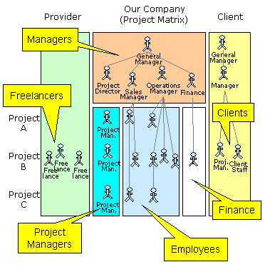
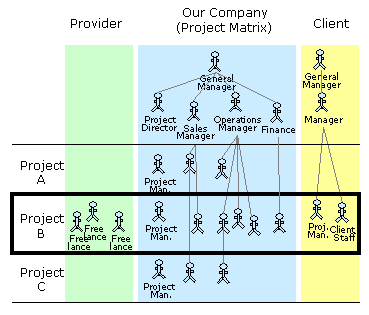

| ]project-open[ |
| ]project-open[ Core : Permissions | ||
|
||
The management of permissions and access rights is the most complicated element of ]project-open[ because it really is a management of trust relationships. There is a dilema between:
To solve this dilema ]project-open[ introduces three types of access permissions:
Each of these concepts are explained below.
User profiles correspond to department membership in the company or business partners respectively.

The figure above depicts the different types of User Profiles:
Please note that the groups Employees, Freelancers and Clients are mutally exclusive.
Project roles define access permissions to project on a case-by-case base. Project roles are particularly useful for "Freelancers" and "Clients" with normally very restricted access to the system.

The figure above depicts a "Project B" that involves project members from both the provider and the company side.
Project Roles can be extended and customized for a specific company. However, a number of predefined project roles exist:
Project/Translation adds several translation specific roles such as:
The user hierarchy determines which user has the right to "administer" (change the password and email, ...) other users. The hierarchy consists of:
Being able to administer a user is particularly useful in cases where the user has forgotten his password or has otherwise problems to work with the system.